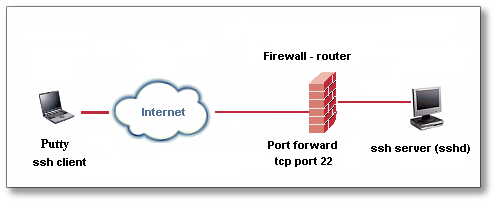
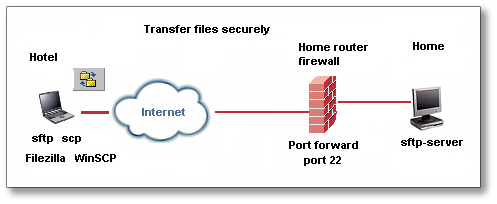
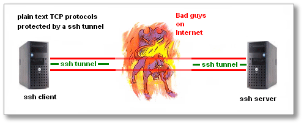
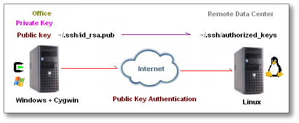

{kind=link}

The behavior of Windows 2003 Server is different. Follow this link to install OpenSSH on Windows 2003 Server, by Stephen Pillinger of the School of Computer Science, University of Brimingham. Or this link to install Cygwin SSH server on Windows 2003 Server, by Kevin Scully at the University of Waterloo, Ontario, Canada.
There seems to be some problems when using cygwin ssh with McAfee 8.0i. A work around to that problem is available below.
Please don't send any questions to the cygwin mailing list to ask questions about this page as it seems to provoke them severely. They considered and declared the instructions on this page "broken" and "random" but won't constructively say what is "broken"; instead some went on launching personal attacks. The information here is provided "as is, in good faith" with no guarantee it will work. If it doesn't work, then it doesn't work. Don't send any questions to the Cygwin mailing list to ask why and provoke them. If you must go to Cygwin mailing list to ask, you better completely remove Cygwin before you go to the mailing list to ask questions and don't even mention that you have looked at this web page (to avoid pissing them off).
Read this Disclaimer.
Constructive comments are of course welcome, in the original spirit of the Internet, sharing experience and knowledge regarding bug fixes and improvements to benefit other users of the Internet community. My email address is
How to install a ssh server (called sshd, from OpenSSH) on a
Windows 2000 or XP
How to install a sftp server on a
Windows 2000 or XP
If you need a PDF converter, the post powerful
pdf converter package
available is Investintech's
pdf server software bundle.
The ssh server is an emulation of the UNIX environment and OpenSSH for Windows, by Redhat, called cygwin
(1a) Login as Administrator
Windows XP -
login as a user with Administrator privilege;
Windows 2003 Server: login as local admin, it will not work for domain users or
domain admin.
(1b) Make sure the current admin/user has a Windows password set.
If not, use Control Panel...User Accounts to create a password.
Just to be on the safe side, after you created a password, logoff and then log
in again.
(2a) Create a folder c:\cygwin
(2b) Download cygwin's setup.exe from http://www.cygwin.com/ and save setup.exe in c:\cygwin
Cygwin's setup.exe has some uncommon properties, click here to find out more.
Click Start...Run...and type c:\cygwin\setup.exe
If you are asked to select "Just Me" or "All Users", choose "All Users"
When it asks for "Local Package Directory", type c:\cygwin
Choose a download site that is "close" to you.
When a selection screen comes up (you can resize the windows to see better),
click the little View button for
"Full" view ,
find the package "openssh", click on
the word "skip" so that an appears in Column B,
see this illustration.
find the package "tcp_wrappers", click on the word "skip" so that an appears in Column B,
find the package "zlib", click on the word "skip"
(it should be already selected) so that an appears in Column B.
tcp_wrappers provides host-based access control.
zlib is the compression and decompression library that is used by many
programs.
Click to start installing cygwin and ssh.
Size of the basic cygwin system is more than 40 Meg, this may take a while.
Take a coffee break.
(3) Right click My Computer,
Properties, Advanced, Environment Variables
See this illustration (red dots)
Click the "New" button to add a new entry to
System variables:
variable name is CYGWIN
variable value is ntsec tty
(4) Right click My Computer, Properties, Advanced,
Environment Variables
See this illustration (green dots)
Select the Path variable and click the "Edit"  button:
button:
append ;c:\cygwin\bin to the end of the existing
variable string.
(5) Open a cygwin window (by double clicking the icon), a black screen pops open, type
ssh-host-config (on slower computers, it may take several minutes to generate the dsa keys)
When the script asks you about "privilege
separation", answer yes
When the script asks about "create local user sshd", answer yes
When the script asks you about "install sshd as a service", answer yes
When the script stops and asks you for "CYGWIN=" your answer is ntsec
tty
(click here for an explanation of
ntsec)
(click here for an explanation of
tty )
(thanks to Peter Reutemann of New Zealand and Ron Dozier of University of
Delaware)
See Note 25 (near the end of this web page) if you need to run ssh-host-config again.
(6) While you are still in the (black) cygwin screen, start
the sshd service
net start sshd
or
cygrunsrv --start sshd
Click here on how to stop the sshd service.
(7) Make sure every Windows user has a password set, if not,
go to Control Panel....User Accounts and create a password.
(7a) Make sure every Windows user has done the following at least
once:
Login in as the Windows user, pop a console command screen by clicking
Start...Run....cmd
Thanks to Magno Corrêa of Brazil for the tip in (7a)
(8) Pop a cygwin window, harmonize Windows user information with cygwin, otherwise they cannot login
mkpasswd -cl > /etc/passwd
mkgroup --local > /etc/group
If your XP logs on to a domain, you most likely have to manually edit /etc/group. See this page.
mkpasswd creates a password file from Windows' user list,
click here
for more details.
mkgroup creates a group file from Windows' user list,
click here
for more details.
Thanks to John Skiggn of Cingular Wireless in Redmond, Washington for his tweak
on domain user /etc/group
If you get an error message like "ssh-exchange-identification: Connection closed by remote host",
it is probably caused by McAfee 8.0i, see this page
about
the fix. Thanks to Ron Dozier of University of Delaware.
If you get a prompt without error messages, type
ls -lh /cygdrive/c
if you see a directory listing, success!
(type exit to end the cygwin ssh
session)
If you have a Unix system that does not know what to do with TERM cygwin, add these scripts to .login
If you have troubles ssh into the server, try run ssh-user-config
Thanks to Jared Kilgour for above $USERNAME variable substitution.
Thanks to Justin Kerk for the tip on quotes around $USERNAME to allow for spaces in username.
Thanks to Ron Dozier of University of Delaware for the Unix .login tweak.
 for his
Windows Firewall reminder)
for his
Windows Firewall reminder)
If you previously used Windows XP
SP1 and installed sshd service, then upgraded to Windows XP SP2,
The "upgrade" disables the sshd service and deletes the CYGWIN environment variable.
Re-enter the environment variables and path.
Click Start...Control Panel....Security Centre....Manage Security Settings for Windows
Firewall....Exceptions tab....Add Port...
"Name of port" is ssh "Port number" is 22 (check the "TCP" checkbox)
(Thanks to Chris Davitt of New Zealand
 for this SP1
-> SP2 glitch)
for this SP1
-> SP2 glitch)
Note:
The behaviors of Windows 2003 Server is different.
Follow this link to install OpenSSH on Windows 2003 Server, by Stephen Pillinger of the School of Computer Science, University of
Birmingham.
On Unix/Linux systems, user names do not contain spaces. On Windows system, user names can have spaces.
If you have a Windows username that contain spaces, expand each space into \ [space],
e.g. if the Windows username is Mickey mouse
ssh Mickey\ mouse@192.168.0.100

If you have a NAT firewall, port forward (D-link calls this Virtual Server) TCP port 22 to the
(internal) IP address
of the
Windows box where the sshd server is running. See above diagram.
Users from the outside (geeks call this a WAN) can
ssh
username@external_ip_address
(e.g. ssh john@64.64.64.64 )
ssh mickey\ mouse@external_ip_address (e.g. ssh mickey\ mouse@64.64.64.64 )
Caveat Emptor
:
-assuming you have an IP address that is accessible by the outside world, some
ISP do not give out outside-accessible IP address.
-assuming your ISP does not suffer from extreme paranoia, he/she allows "port 22
TCP" traffic through their network.
-assuming your firewall allows TCP port 22 and port forwards to the
computer running the ssh server.
If you need to use TCP port 443 as the sshd listening port (instead of the
default port 22),
see this page.

As a
bonus, openssh includes sftp and sftp-server for
doing encrypted file transfers.
These two programs function much like the familiar ftp-client and ftp-server.
For example, from a remote laptop, you can transfer (send and retrieve) files to
your home computer (see above diagram).
sftp username@ip_address (e.g. sftp john@32.97.166.74 )
sftp username@hostname
(e.g. sftp john@supercompuer.ibm.com )
openSSH [which uses openSSL] has strong encryption capability.
The encryption used by openSSH can be either AES-128, AES-192, AES-256, 3DES,
Blowfish, cast-128, arcfour (RC4)
The default encryption algorithm (cipher) is AES-128-CBC.
You can
force a particular encryption algorithm preference (cipher) by adding a directive such as
Ciphers blowfish-cbc,aes128-cbc,3des-cbc
to /etc/sshd_config
The sftp client I like best is
Filezilla.
Caveat Emptor
:
-assuming you have an IP address that is accessible by the outside world, some
ISP do not give out outside-accessible IP address.
-assuming your ISP does not suffer from extreme paranoia, he/she allows "port 22
TCP" traffic through their network.
-assuming your firewall allows TCP port 22 and port forwards to the
computer running the ssh server.
After you establish a ssh or sftp connection into the Windows box,
changing directory is rather painful, for example, to change to "my documents",
type
cd "/cygdrive/c/documents and
settings/$USERNAME/my documents"
Similarly, to change directory to d: drive
cd
/cygdrive/d
To reduce pain, use a graphical sftp client such as Filezilla.
Where can you find a ssh or sftp client ?
(1) Putty
is the best ssh client for Windows, it also
has psftp.exe which is a console mode sftp client.
(2) Commercial software vendors such as VanDyke Software.
(3) Filezilla,
a free, GNU (GPL) licensed sftp client.
If you prefer to use a graphical client to do sftp file
transfers,
purchase a high quality commercial software called SecureFX
from VanDyke Software in Albuquerque, New Mexico, USA
or use Filezilla, a free, GNU (GPL) licensed sftp client,
or use WinSCP,
a free, GNU (GPL) licensed sftp and scp client.
Also, ftp.ssh.com in their /pub/ssh directory, there is a Windows version
of ssh and sftp client for non-commercial use,
thanks to Stephan of Rutgers State University of New Jersey  for the link.
for the link.
openSSH [which uses openSSL] has strong encryption capability.
The encryption used by openSSH can be either AES-128, AES-192, AES-256, 3DES,
Blowfish, cast-128, arcfour (RC4)
The default encryption algorithm (cipher) is AES-128-CBC.
You can
force a particular encryption algorithm preference (cipher) by adding a line such as
Ciphers blowfish-cbc,aes128-cbc,3des-cbc
to /etc/sshd_config (Blowfish runs faster than AES-128)

Below are some popular plain-text, pure TCP protocols that are unfortunately
still in common use today.
Fortunately these protocols can benefit from
the protection of a ssh tunnel:
POP3 (tcp port 110)
IMAP (tcp port 143)
SMTP (tcp port 25)
TELNET (tcp port 21)
VNC (tcp port 5900)
Print server traffic (tcp port 9100)
Note:
The world is moving away (rather slowly) from plain text protocols by hardening them with TLS or SSL:
newer versions of POP3 servers have TLS support at port 110; and SSL support at port 995
newer versions of IMAP servers have TLS support at port 143; and SSL support at port 993
newer versions of SMTP servers have TLS support at port 25
A
version of "smtps" uses port 465 with SSL support, now
it becomes legacy (depreciated).
SMTP can also use port 587 in plain text or TLS.
newer versions of telnet servers have SSL support at port 992
See this page
on how to tunnel VNC traffic under ssh.
See this page on how to tunnel TCP
applications under ssh.
See this page on how to set up a
dedicated PPTP VPN server at your home office or main office.
See this page on how to set up a
tethered modem using Telus Blackberry smart-phone to connect to laptop.
Sometimes, there are applications such as mid-night back-up of files
to a remote Linux server using "rsync encrypted with ssh",
you want to be able to ssh from one machine to another machine without a person sitting at the console to type a password.
See this page on how to ssh from one machine into another machine without typing a password, i.e,
how to use public key authentication.
Once you can ssh from one machine to another machine without typing a
password, your task of doing rsync over ssh
is practically 90% done. Furthermore, create a batch file and invoke this batch
file from Control Panel's "Schedule Tasks"
will do secure backup automatically. In Linux world, add a cron job to do "rsync
-e ssh"

How to install a ssh client (called ssh)
Click here for a tutorial on
how to setup a ssh client on Windows 2000 or Windows XP
How to install a smtp server [exim] on a
Windows machine
Click here for a tutorial
on how to setup exim, a mail transfer agent
on Windows 2000 or Windows XP as a
learning
exercise.
Note 25: if you run ssh-host-config when sshd is installed, ssh-host-config will not ask for
the CYGWIN
value.
In that case, stop and remove the sshd service, then run the ssh-host-config
script again, see below.
cygrunsrv --stop sshd
cygrunsrv --remove sshd
ssh-host-config
cygrunsrv --start sshd
Go to Control Panel, Classic View, Administrative
Tools, Computer Management,
or click Start...Run...compmgmt.msc
delete the sshd user account.
Thanks to Dave Abrahams of Boost Consulting for the sshd user account deletion hint.
Reference: http://cygwin.com/cygwin-ug-net/
Thanks to Mike Skallas for his tips on "privilege separation" during
the setup script.
Thanks to Jan Haul of Hamburg, Germany  for his WinSCP link.
for his WinSCP link.
Thanks to Brad Erdman, Institute for Advanced Computer Studies,
University of Maryland, USA 
for his confirmation of cygwin-sshd working on Windows Server 2003
Thanks to Richard Goodman of UK  for his tips on the order of CYGWIN variable.
for his tips on the order of CYGWIN variable.
You can also use sshwindows
from Sourceforge to install ssh and sshd on Windows without the full
cygwin package.
http://www.lns.cornell.edu/public/COMP/cygwin/cyg_inst_net.html is the link
to install Cygwin with Xfree86. Thanks to Richard Ward for this link.
© 2003-2007 Nicholas Fong
Last revised: July 22, 2007
{kind=link}